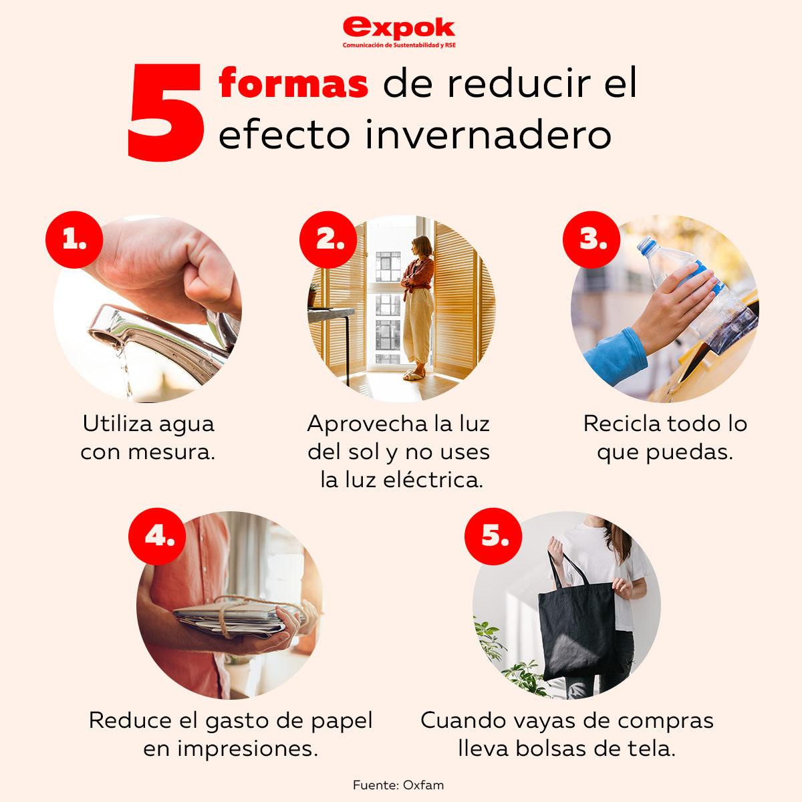

Gases De Efecto Invernadero
Información sobre los Gases De Efecto Invernadero
Consejos para reducir los Gases De Efecto Invernadero
Adquisición y uso responsable de los electrodomésticos
A la hora de adquirir un electrodoméstico es importante conocer su grado de eficiencia energética ya que pueden existir grandes diferencias para unas prestaciones similares. Pregunta por su categoría energética: la mejor, la A; la peor, la G.
No dejes el botón de ‘stand by’ encendido durante mucho tiempo ya que, aunque esté apagado, el electrodoméstico sigue consumiendo energía.
Utilizar siempre el lavavajillas o la lavadora a plena carga o hacer uso de programas cortos o económicos.
Utilizar la secadora de ropa en ocasiones puntuales, ya que es una gran consumidora de energía. En caso de tener que usarla de forma habitual, centrifuga la ropa previamente para minimizar el consumo de energía de la secadora.
Es recomendable ajustar el termostato del frigorífico a 6 ºC en la zona de refrigeración y -18 ºC en la zona de congelación. Por cada grado que disminuyamos se incrementa un 5% el consumo de energía.
Utilizar el microondas en lugar del horno tradicional permite ahorros de energía cercanos al 60%.
Tapando las cazuelas durante la cocción de los alimentos se ahorra energía, ya que existe menor pérdida de calor.
Gestión de la basura
Separar las diferentes fracciones de residuos (orgánicos, plásticos y envases, vidrio, papel y cartón) y disponerlos correctamente en los contenedores.
Reducir al máximo el plástico que se tira a la basura, ya que tarda mucho en degradarse.
Procurar minimizar el uso de papel de aluminio para envolver alimentos. La fabricación de aluminio es uno de los procesos industriales con mayor consumo de energía.
Elegir siempre un envase de vidrio frente a uno de plástico.
Solicitar información en el ayuntamiento sobre los servicios de recogida de pilas, aceites usados o medicamentos. Son materiales tóxicos que no deben arrojarse a la basura.
Climatización responsable
En invierno una temperatura de entre 19º C y 21º C es suficiente para muchas personas y permite un ahorro energético importante, ya que cada grado que subimos la temperatura el consumo de energía se incrementa en un 7% aproximadamente.
Un mantenimiento adecuado de calderas y radiadores permite un ahorro importante de energía (cercano al 15% en el caso de las calderas individuales).
Ahorro de agua
En la ducha se consume aproximadamente una cuarta parte del agua y energía que se necesita para un baño.
Así reducimos el consumo de agua: cerrando el grifo cuando no es estrictamente necesario, reparando las fugas de grifos y cisternas, utilizando cabezales de ducha de bajo consumo o reductores de caudal.
Bañarse con agua tibia (entre 29° C y 37° C) es agradable y, además de no causar daños a la piel, permite ahorrar energía.
Se puede ahorrar gran cantidad de agua en el inodoro utilizando en la cisterna los sistemas de doble pulsador o de descarga parcial.
Existen relojes programadores para los termos eléctricos que limitan su funcionamiento a los momentos en los que se necesita agua caliente, lo que permite ahorrar la energía del resto de tiempo de funcionamiento innecesario.
